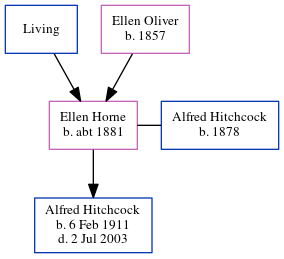

James John Horne 1882 - 1972
[ Home ] | [ Calendar ] | [ Surnames Index ] | [ Errors ] | [ Family History ]A plate glass cutter and the child of James Horn (an engine fitter) and Ellen Oliver (a silk weaver), James Horne, the second cousin twice-removed on the father's side of Nigel Horne, was born in Bethnal Green, London, England on 2 Dec 18821,2,3,4, was baptised there at St Matthias on 24 Dec 1882 and married his first cousin once-removed on his father's side Florence Horne (a domestic general help with whom he had 1 child, James George) at St James' Church, Forest Gate, London, England on 24 Mar 19136.
During his life, he was living at 155 Gosset Street in Bethnal Green on 5 Apr 18911; at 32 Belgrave Street, Stepney, London on 31 Mar 19018; at 70 Warner Place in Bethnal Green on 2 Apr 19117 - less than a mile from his sister Ellen who was living at 50 Corfield Street in Bethnal Green and his mother Ellen Oliver who was living at 70 Warner Place in Bethnal Green -; and at 50 Idmiston Road, West Ham, London on 19 Jun 19219, on 29 Sept 19392 and in 1972. In 1921 he was working at T & W Ide Glass Merchants on Brook Street, Ratcliffe, London, England.
He died on 19 Apr 1972 in Newham, London, England4,5.
Parents
- James John
- Ellen was born in 1857
Children
- James George was born on 26 Dec 1914
Citations
- 1891 England, Wales & Scotland Census - Findmypast (was age 8 and the son of the head of the household)
- 1939 Register - Findmypast (was the head of the household)
- England & Wales births 1837-2006 - Findmypast
- England & Wales deaths 1837-2007 - Findmypast
- England & Wales Government Probate Death Index 1960-2019 - Findmypast
- England & Wales Marriages 1837-2005 - Findmypast
- 1911 Census for England & Wales - Findmypast (was age 28 and the son of the head of the household)
- 1901 England, Wales & Scotland Census - Findmypast (was age 18 and the son of the head of the household)
- 1921 Census Of England & Wales - Findmypast (was age 38 and the head of the household)
Media
James John Horne - Probate
1911 Census For England & Wales - GBC-1911-RG14-01385-0229-3
1939 Register Transcription - TNA-R39-1026-1026B-003-21
1939 Register Transcription - TNA-R39-1026-1026B-003-23
England & Wales Deaths 1837-2007 - BMD-D-1972-2-AZ-000556-103
1901 England, Wales & Scotland Census - GBC/1901/0007341745
England & Wales births 1837-2006 - BMD/B/1883/1/AZ/000293/112
England & Wales Government Probate Death Index 1960-2019 - GBOR/GOVPROBATE/A/1972-1974/00452413
England & Wales marriages 1837-2005 - BMD/M/1913/1/AZ/000442/133
1921 Census of England & Wales - GBC/1921/RG15/08309/0537/01
Family Tree
Map
Generated by ged2site. Last updated on Jul 3, 2024
Known Issues
Surname is different from both parents
Residence record for 1972 contains no citation
Listed in the residence for 19 Jun 1921, but spouse Florence Horne is not
Listed in the residence for 29 Sep 1939, but spouse Florence Horne is not
Listed in the residence for 1972, but spouse Florence Horne is not